Natural Phenethylamine Precursorsa.k.a. "Ya Don't Say"Ya know what? There are a lot of interesting amphetamine precursors just sitting around in plants, spice racks, grocery shelves and DEA storage facilities. Like their X and speed counterparts, these precursors are turned into their own, often more powerful, amphetamines via the exact same procedures. The following compounds with descriptions and sources were taken from "Essential Oils" by Guenther, "The Illustrated Encyclopedia of Essential Oils" by Julia Lawless, and The Merck Index. All of these compounds can, if desired, be easily manipualted to produce X or Meth. |
|
ANETHOLE: Main constituent of anise (the seed) oil (90%), star anise and fennel oils. Note that it is a propenylbenzene like isosafrole. 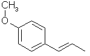 APIOLE (DILL): About 10% of dill oil and celery seed oil. A completely psychedelic amphetamine. 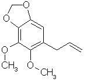 APIOLE (PARSLEY): Main constituent of parsley seed oil. 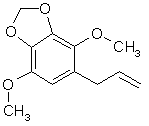 ASARONE: From the root of Asarum europaeum, Acorus calamus and similar species. Calamus is an Indian water plant and its root oil is about 80% asarone. Asarone can exist as an alpha(trans) or beta(cis) isomer from its natural source. Note that species is also a propenylbenzene. This is a precursor for TMA-2. 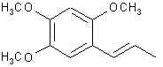 CHAVICOL: In Betel oils, especially Piper betle l., Piperaceae, and in oil of bay up to 10%. 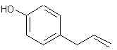 CINNAMALDEHYDE: Main constituent of Chinese and Ceylon cinnamon bark oils. Also in small amounts in hyacinth and myrrh. 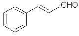 CROWEACIN: Possibly one of the most powerful amphetamine precursors known. From (get this) the terminal branchlets of Eriosteum crowei. Looks like myristicin but it ain't. 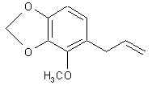 ELEMICIN: The amphetamine answer to mescalin. Found as the main constituent of Manila elemi oil and in small amounts in nutmeg oil. This is the precursor for TMA. 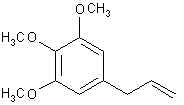 ESTRAGOLE: Is the main constituent of tarragon oil ( aka estragon oil) (70%). Is also found in Artemisia dracunculus L., Compositae (esdragon) of about 70%, and in chervil. Oh, and by the way, SWIM finally found out what was in basil. It's this stuff. That junk that's growing like a weed in yours and I's backyard known as 'sweet basil' (Ocimum basilicum) has an oil content of 90% of this stuff! Oh baby! It is also about 50% of 'French basil' oil and in long leaf pine oil.. This species is also called methyl chavicol and you may notice that it looks just like anethole except that it is an 'allylbenzene'. 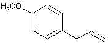 EUGENOL: In way too many oils to mention. Of chief concern are the oils of cinnamon leaf (95%!), bay leaf oil (60%), and Clove where it is over 90% of the oils of the bud, leaf and stem. In allspice berries it is 80-90% and in the allspice leaves it is almost 100% of the oil. SWIM is also privy to a homeopathic toothache medication that is 85% eugenol (says so right here on the bottle). 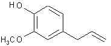 EVERNIC ACID: Dammit! SWIM can't find the source SWIM had for this higher order 'phenylacetic acid' amphetamine precursor. Get back to you soon with the facts. 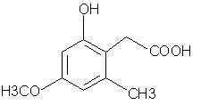 FERULIC ACID: Found in small amounts in a wide variety of plants. Used as a food preservative. 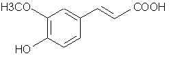 MYRISTICIN: The grandaddy of the pshychedelic amphetamine genre (by the way, SWIM does not consider X to be a psychedelic). This sucker is in carrots, sassafras oil, in about 8% in nutmeg oil and (hold on to your hats) about 90% of the oil in ordinary parsley leaves. Yes, that same shit on your dinner plate. 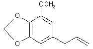 In " The Book " SWIM devoted a lot of time discussing ground-up precursor synthesis from simpler chemicals. Easy enough. Keeps people out of trouble. But what if there existed compounds like ephedrine which, for all means and purposes, is the final drug already made. It may have been Michaelangello (I ain't sure) that said that the sculpture was already in the stone. All one has to do is remove the excess pieces to reveal it. Thats what's done with ephedrine. The following list of compounds was found by SWIM during a casual perusal of the Merck Index. Took less than a day. The structure drawing took SWIM a lot more time, hence, among other things,the delay in new material for the last few weeks. That many of these compounds have gone unchecked is because they are not immediately applicable to speed which would bring on too much intense scrutiny of the product. What SWIM sees here is an astonishing collection of molecules so close to final amphetamines that it is truly scary. Pay close notice to the dopamine and epinephrine groups. They're making SWIM unusually nervous. The first number is the Merck Index designation. The first word in bold is the Merck Index name of the compound. This is followed by any commercial, pharmaceutical or grocery store product names, and any applicable synthesis remarks SWIM feels are necessary. All of the below compounds are legal to own. 170. Adrenalone (Kephrine, Stryphnone, Strypnone, Stryphnonasal)- SWIM includes five easy recipes for the methylenation of those ortho OH catechol species (ie the connectiing of the two to get the methylenedioxy structure that safrole has). Reduction of the ketone is no problem, and what you get from all this is the N-methyl precursor for some phenethylamines. 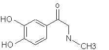 173. Adrenolutin -Must be some way to decyclatize that ring. 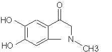 467. Beta-amino-alpha-methylphenylethyl alcohol (norisoephedrine)- deamination gives the very useable P-2-Pol. 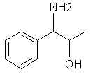 491. alpha-(alpha-Aminopropyl) benzyl alcohol- The butyl counterpart to ephedrine. A lot of people dont know this, but the butyl amphetamines are almost identical acting to the normal propyl amphetamines. 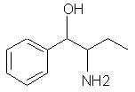 611. Amoproxan- Straight-up ether cleavage or acid hydrolysis proximal to that ketone would give some interesting precursors for making mescalin, ot TMA amphetamines. 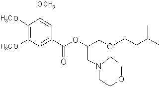 620. Amphecloral (Amfecloral, Acutran)- That doublebond on the nitrogen looks vulnerable, don't it? 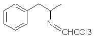 623. Amphetamine- Whoops! How did that get in here?! 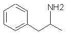 701. p-Anisaldehyde- ? 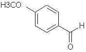 715. p-Anol- Just the propenyl counterpart to anethole.
874. Aspartame (Canderel, Equal, Nutrasweet, Sanecta, Tri-Sweet)- SWIM sees something here. That N-grouping stuck on the nitrogen can be simply removed by acid or base hydrolysis. Will this affect the ketone ether part? Can the ketone ether group be protected? SWIM ain't going to rest on this one until we have amphetamines for our corn flakes. Right now all SWIM can see is blowing the fuck out of this stuff with acid to give phenylalanine. Which happens to be the starting material for making this sugar. Go figure! 892. Atenol (Atenol, Cuxanorm, Ibinolo, Myocord, Prenormine, Seles Beta, Selobloc, Teno-basan, Tenoblock, Tenormin, Uniloc)- This ones a no-brainer: methylation of ketone then acid hydrolysis of ether linkage. Product: amphetamine. 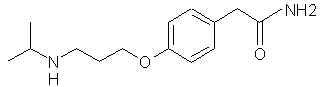 1673. Caffeic Acid- Methylenation is obvious. Oooo! A sorry-ass carboxylic acid! It is only a matter of time, Mr. carboxylic acid...only a matter of time. 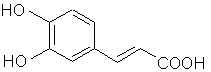 1954. Cathinone- Extracted from khat leaves. It also happens to be a non-meth CAT. 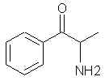 2090. Chavicine- Found in black pepper. SWIM sees vulnerabilities in the doublebond/ketone area. Might end up with a butenyl isosafrole. 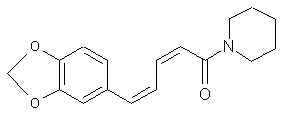 2120. Chloramphenicol (Too many product names to list)- Acid hydrolysis to get the hydroxy ephedrine. What to do about that crazy nitro group. 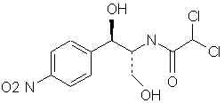 2950. Deoxyepinephrine (Epinine)- Simple methylenation gives the N-methyl phenethylamine. 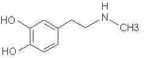 3356. Dioxyethedrine- Methylenation will yield the MDEA equivallent of ephedrine. 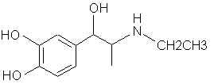 3478. Dopa- In the seedlings and pods of Vicia faba (broad beans). Methylenation affords the X equivalent of the amino acid phenylalanine. Yikes! This carboxylic acid problem is really starting to hit home. 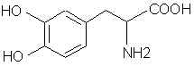 3479. Dopamine- (ASL-279, Cardiosteril, Dopastat, Dynatra, Inovan, Inotropin) There are ways to make mescaline and other phenethylamines from this. 3513. Droxidopa (DOPS, SM-5688) Laters on that carboxyl thing and it's X PPA. 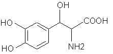 3656. Epinephrine (Adrenaline, Levorenin, Broncaid Mist, Epiglaufrine, Eppy, Glauposine, Primatine Mist, Simplene, Sus-phrine, Suprarenaline, Adrenalin, Epifrin, Glaucon, Asthmatane Mist, Asthma-Haler, Epitrate, Medihaler-Epi. Epinal, Asthmanefrine, Vaponefrin) Looks to SWIM like another N-methyl phenethylamine. Look at those brand names! 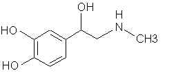 3752. Etafedrine (Nethamine, Menetryl, Novedrin) N-ethyl ephedrine. 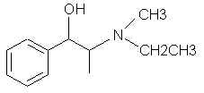 3816. alpha-Ethylbenzyl alcohol (SH-261, Ejibil, Livonal, Phenycholon, Phenicol, Phenychol, Felicure, Felitrope) Look folks. This product, when mixed only with potassium bisulphate and heated, will give almost 100% yield propenylbenzene. 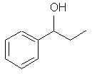 3880. Ethylnorepinephrine (ENE, ENS, Bronkephrine). Methylenation gives X PPA! 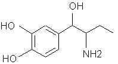 3911. Etilephrine (Apocretin, Circupon, Effontil, Effortilvet, Effortil, Ethyl Adrianol, Eti-Puren, Kertasin, Pulsamin, Tonus-forte) If you smack this thing around with a little Riemer-Tiemann action or some 3% H2O2 and your right there with a more respectable phenethylamine precursor. 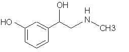 4015. Fenfluramine (Acino, Adipomin, Obedrex, Pesos, Ponderal, Ponderex, Ponderax, Pondimin, Rotondin Adifax, Glypolix, Isomeride) - A trifluoromethyl N-ethyl amphetamine. Is this part of that Fen/Phen crap? 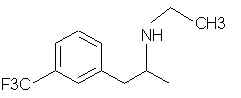 4289. Fraxetin - What if one just smashed opon that ether linkage? Possibility of a tetramethoxy mega precursor. 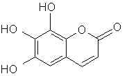 4360. Gallacetophenone (Alizarine Yellow [a pigment]) - SWIM sees a few ways to go here. Work with the acetophenone or reduce it and trimethylate the OH's, or trimethylate and POC13 to get the 2, 3, 4 methoxy TMA or mescalin benzaldehyde. 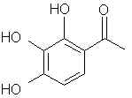 4363. Gallic Acid (Methyl Gallate, Gallicin) Can this (or any other bezoic acid) be utilized? 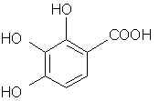 4409. Gepefrine (Pressionorm, Wintonin) - DEA forensic scientist testifying before Congress: "Ahem - Your Honors, we find no reason to schedule hydroxy amphetamines because the hydroxyl group (as we all know) prohibits uptake to the brain". Congressman: "Couldn't someone easily tack on a methyl group to the OH or dihydrate so as to precipitate the formation of a methylenedioxy ring structure?" DEA: quot;Huh?"
4429. Gigantine - Says here that this is a hallucinogen from the cactus Carnegia gigantea. No amphetamine here I knows. But does anybody know what cactus this is? Gives a source article as Tet. Lett. (l967), p 1321. Pretty new discovery (ie unwatched). 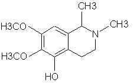 4778. Homovanillic Acid - A phenylacetic acid. 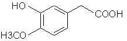 4807. Hydrastinine - You know SWIM has read enough of PIHKAL and other compendiums of the extensions of compounds that retain activity. Does anyone else think that without the OH this compound would carry a pseudoamphetamine character? Active as is? Says it's made from safrole. Hmm?!
4829. Hydrocotarnine - Uh oh! This one says this is a byproduct of morphine extraction and is a precursor for #4807. Good eye, SWIM. Gives no data on any tried human effects. Looks like a cyclicized croweacin. Hmmm? 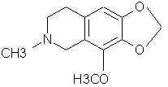 [Yikes! SWIM traced #4807 & 4829 as products of Merck #2618 "Cotarnine" which has quite a few brand names and comes from poppy seeds. This in turn comes from, or can come from, the main progenitor of all: Narcotine, which in Merck is called Noscapine (#6815). This last progenitor has a ton of brand name sources (all legal). The product comes naturally from opium distillation yet is uncontrolled. I will swear up and down that there is an uncontrolled potential here...wait a minute!! Does that cactus compound hallucinogen Gigantine look like a cyclicized TMA -like amphetamine!!!(I swears SWIM is writing this just at the moment SWIM is thinking this). Whoa! Whoa! Whoa! This is way out of SWIM's league. SWIM is going back to the countdown.] 4846. Hydrohydrastinine - Let SWIM alone foul temptress! O' foul [gulp] unscheduled [gulp] untested temptress! 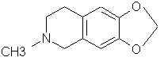 4853. Hydroquinone - Where do (can) all of the hyperpowerful 2, 5 dimethoxy amphetamines such as DOM, 2CB, etc. come from? From this species. Says is used as a photography developer. 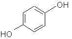 4855. Hydroxyamphetamine -(Paredrine, Paradrinex, Pulsoton) - See #4409. 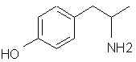 4856. P-Hydroxybenzaldehyde 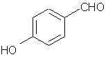 4869. P-Hydroxyephedrine - (Oxyphedrine, Carnigen, Edornat, Methylsympatol, Suprifen) - Higher order ephedrines are very possible. 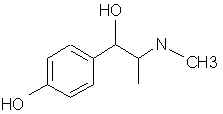 4966. Indan - Did anyone pay any attention to Shulgin's designer amphetamines? This will work as the "1, 3-Benzodioxole" for them. Eh, book owners?! 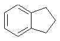 5185. Isoetharine - (Etyprenaline, Isoetarine, Win-3046, Dilabron, Neoisuprel, Asthmalitan, Numotac) - a partially active N-isopropyl amphetamine (Butyl) when converted.
5490. Levodopa - (too many brand names to mention) Obvious methylenation will give the exact X counterpart to phenylalanine. Damn that COOH!
5602. Lophophorine - ?!! You know Shulgin talks about a lopho something or other amphetamine. Yeesh! Here's that crazy- looking type compound again.
5987. Metanephrine - Maybe something here if one was willing to work at it.
5993. Metaraminol - (Metaradrine, Pressonex, Aramine, Icoral B, Pressorol) - Definitely a usable PPA!
6067. Methoxamine - (Vasoxine, Vasoxyl, Vasylox) Oh baby, does this look good (legal too)! This is the 'ephedrine' for DOM! And any other of those 2, 5 dimethoxy superdrugs. Those brand names are prescriptions that must be filled.
6077. Methoxyphenamine - (Proasma, Orthoxine) Fuckin full-blown methamphetamine waiting for one (almost any one) addition to the phenyl ring to make it orbital! There are excellent methods in place for para substitutions (don't ask) relative to the methoxy group to give the DOM precursor.
6132. Methyldopa - (AMD, MK-351, Aldomet, Aldometyl, Aldomine, Dopamet, Dopegyt, Elanpres, Equibar, Lederdopa, Medomet, Medopa, Medopren, Methoplain, Sembrina, Presinol) - Can this sucker be decarboxylated!!!
6145. N-Methylephedrine - (Metheph) - Having 2 methyl groups on the nitrogen of this amphetamine will weaken it but it will still retain activity.
6212. Alpha-Methyl-M-Tyrosine - See #6132. Can someone check out the synthesis article for this? (JACS, 77, p.700 (1955). If this comes from tyrosine by methylating it and it happens to be that this species can then be decarboxylated, then we're going to be in a lot of trouble. 6248. Metyrosine - (MPT, MK-781) see #6212. 6272. Midodrine (ST-1085, Alphamine, Amatine, Gutron, Hiperta, Metligine, Midamine) Here is the making of a true 2CB precursor! Normal acid or base hydrolysis will cleave the N-group off to give an alpha OH 2,5,dimethoxyphenethylamine! The 2CB precursor that is one simple chlorination, bromination, iodenation or whatever-ination away. This compound is it!!!
6371. Moxaverine - (Eupaverin, Eupaverina, Kollateral Sorbosa) - Can that bond complex between the N and the phenyl ring be busted up? If an N-ethyl benzene results it's an active amphetamine. If a 2-ethyl benzene occurs then that probably ain't so hot. If anything like a methyl or some such shit arises at the 2 position then you have a badass TMA like homologue. In any event that nitrogen double bond is a point of attack.
6785. Nordefrin (Corbasil, Cobefrin, Corbadrine, Levonorde-Frin, Neo-Cobefrin) Methylenation gives X PPA exactly!
6788. Norepinephrine (Arterenol, Levarterenol, Aktamin, Binodrenal) 6792. Norfenefrine (Coritat, Depot-Novadral, Energona, Esbuphon, Molycor-R, Novadral, Stagural, Tonolift, Vingsal, Zondel) 6803. Normetanephrine - (3-0-Methylnorepinephrine)
6811. Norpseudoephedrine (Cathine, Katine, Amorphan, Adiposetten, Exponcit N, Fasupond, Fugoa, Minusin) - A little different chirality. What's the big deal?
6856. Octopamine (Epirenor, Norden, Norfen, Norphen)
6893. Opianic Acid - Nice-looking potential benzaldehyde. Probably ain't too common.
7176. Paroxypropione - (P.O.P, B-360, H-365, Profenone, Frenatol, Frenohypon, Paroxon, Possipione, Hypostat) That ketone can most certainly be popped off to give an elimination product (ie hydroxyphenylpropene)
7202. Pellotine - From mescal buttons (peyote). Uh oh! It's that structure again.
7425. Phenylalanine - SWIM knows, SWIM knows!
7461. Phenylpropanolamine (PPA, Mydriatin, Kontexin, Monydrin, Obestat, Propadrine) This is PPA. Shouldn't be any more controlled than Ephedrine. In fact, probably much less so.
7485. Pholedrine (Paradrinol, Pulsotyl, Veritol) - It would be interesting to see which precursors this was made from. This is meth with an OH. Just methylate the damn thing!
8015. Propiophenone - Definite reduction target.
8045. Propylhexedrine - (Ethylphenylbarbiturate, Barbexaclone, Maliasin) - Is there a way to dehydrogenate that cyclohexane?
8079. Protocatechualdehyde - One Methylenation away from being piperonal.
8082. Protokylol - (JB-251, Caytine, Ventaire) - If any cleavage can be done in or around that OH then there is an immediate X drug.
8393. Rimiterol (R-798, WG-253, Asmaten, Pulmadil) - SWIM feels that here, with a cleanup of all the OH species, a novel little sort of amine drug may occur.
8548. Scoparone - Ether breakage would give an interesting little carboxylic acid. Possibly a nearly asarone-like precursor.
8569. Selegiline (Deprenyl, Eldeprine, Eldepryl, Jumex, Movergan, Plurimen) - A monoamine oxidase inhibitor (don't ask). Maybe something here. Probably not.
9183. Surinamine (N-methyl-tyrosine) 9191. Syringaldehyde - Definite benzaldehyde precursor for mescalin and TMAs. That OH is easily methylated.
9850. Trimetozine (V-7, Opalene, Trioxazine) What would happen to this under hydrolysis? Trimethoxybenzaldehyde? Trimethoxybenzene? Trimethoxytoluene? Both are usable to SWIM.
9966. Tyramine (Mydrial, Uteramin) - The decarboxylation product of tyrosine.
9970. Tyrosine
10084. Veratralaldehyde. |